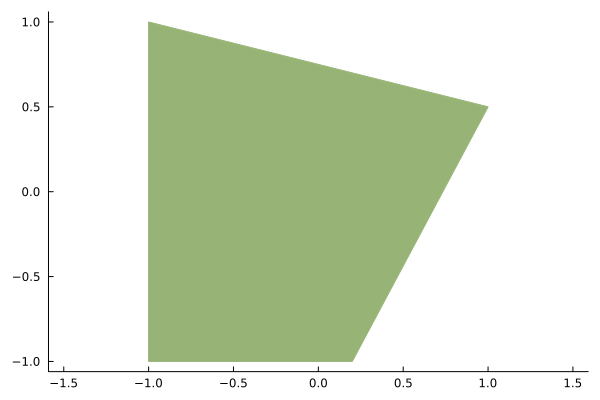
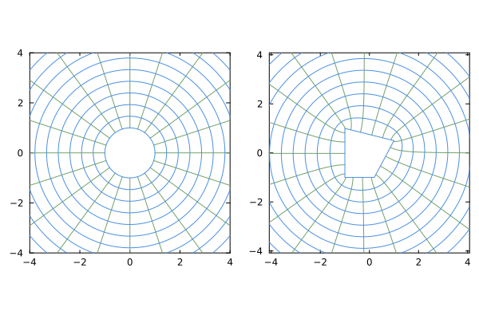
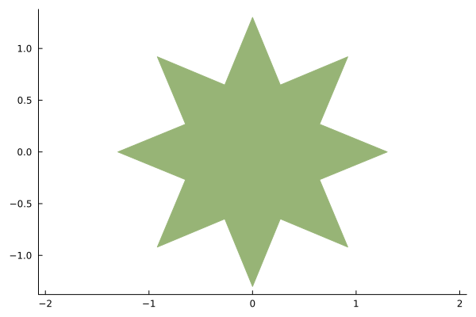
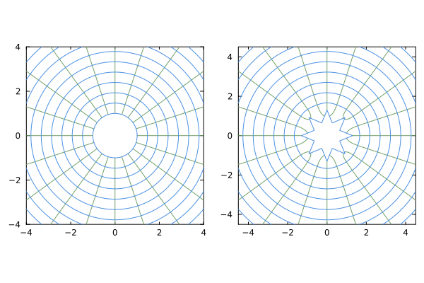

Basic usage
Let's first initiate the module. We'll also initiate plotting with Plots.jl, using PyPlot as the backend for the actual output.
julia> using SchwarzChristoffeljulia> using Plotsjulia> pyplot()Plots.PyPlotBackend()
Now, we create a polygon shape by specifying its vertices. Note that the vertices must be provided in counter-clockwise order.
julia> x = [-1.0,0.2,1.0,-1.0]; y = [-1.0,-1.0,0.5,1.0];julia> p = Polygon(x,y)Polygon with 4 vertices at (-1.0,-1.0) (0.2,-1.0) (1.0,0.5) (-1.0,1.0) interior angles/π = [0.5, 0.656, 0.422, 0.422]
Let's plot the polygon to make sure it matches what we wanted.
julia> plot(p)Plot{Plots.PyPlotBackend() n=1}

Now, we create the map from the unit circle to the polygon.
julia> m = ExteriorMap(p)Schwarz-Christoffel map of unit circle to exterior of polygon with 4 vertices
Let's visualize what we've constructed. Here, we will inspect the mapping from the exterior of the unit circle to the exterior of the polygon.
julia> plot(m)Plot{Plots.PyPlotBackend() n=60}

We can now easily evaluate the map at any place we like. It could be evaluated outside the unit circle:
julia> ζ = 1.2 + 0.1im1.2 + 0.1imjulia> m(ζ)1.0849884084568366 + 0.2410831373600848im
or it could be evaluated inside the unit circle:
julia> ζ = 0.5 + 0.1im0.5 + 0.1imjulia> m(ζ;inside=true)-1.7897029858410032 - 1.288291097756568im
We can also evaluate the first and second derivative of the map at any place(s). Let's evaluate at a range of points outside the circle.
julia> dm = DerivativeMap(m)d/dζ of Schwarz-Christoffel map of unit circle to exterior of polygon with 4 verticesjulia> ζ = collect(1.1:0.1:2.0) .+ 0.1im10-element Vector{ComplexF64}: 1.1 + 0.1im 1.2 + 0.1im 1.3 + 0.1im 1.4 + 0.1im 1.5 + 0.1im 1.6 + 0.1im 1.7 + 0.1im 1.8 + 0.1im 1.9 + 0.1im 2.0 + 0.1imjulia> dz,ddz = dm(ζ);julia> dz10-element Vector{ComplexF64}: 0.8723555976319952 - 0.39447513501601167im 0.9017237398517363 - 0.28935467033496115im 0.9255615782056175 - 0.21799439900342538im 0.9440588034755801 - 0.16826386737168986im 0.9582547929005599 - 0.13265728358061923im 0.9691896575217364 - 0.10652244566711483im 0.9776947206989597 - 0.08691284233716967im 0.9843890003381647 - 0.07191147884515542im 0.9897232289777192 - 0.06023761983615822im 0.9940246663281604 - 0.05101441224156833im
Now let's try a more interesting shape. Here's a star-shaped body
julia> n = 8; dθ = 2π/(2n)0.39269908169872414julia> θ = collect(0:dθ:2π-dθ)16-element Vector{Float64}: 0.0 0.39269908169872414 0.7853981633974483 1.1780972450961724 1.5707963267948966 1.9634954084936207 2.356194490192345 2.748893571891069 3.141592653589793 3.5342917352885173 3.9269908169872414 4.319689898685965 4.71238898038469 5.105088062083414 5.497787143782138 5.890486225480862julia> w = (1 .+ 0.3cos.(n*θ)).*exp.(im*θ)16-element Vector{ComplexF64}: 1.3 + 0.0im 0.6467156727579007 + 0.26787840265556284im 0.9192388155425119 + 0.9192388155425117im 0.26787840265556284 + 0.6467156727579007im 7.960204194457797e-17 + 1.3im -0.2678784026555628 + 0.6467156727579007im -0.9192388155425117 + 0.9192388155425119im -0.6467156727579007 + 0.2678784026555629im -1.3 + 1.5920408388915593e-16im -0.6467156727579008 - 0.26787840265556273im -0.919238815542512 - 0.9192388155425117im -0.26787840265556323 - 0.6467156727579005im -2.3880612583373386e-16 - 1.3im 0.267878402655563 - 0.6467156727579007im 0.9192388155425116 - 0.919238815542512im 0.6467156727579005 - 0.26787840265556323imjulia> p = Polygon(w)Polygon with 16 vertices at (1.3,0.0) (0.6467156727579007,0.26787840265556284) (0.9192388155425119,0.9192388155425117) (0.26787840265556284,0.6467156727579007) (7.960204194457797e-17,1.3) (-0.2678784026555628,0.6467156727579007) (-0.9192388155425117,0.9192388155425119) (-0.6467156727579007,0.2678784026555629) (-1.3,1.5920408388915593e-16) (-0.6467156727579008,-0.26787840265556273) (-0.919238815542512,-0.9192388155425117) (-0.26787840265556323,-0.6467156727579005) (-2.3880612583373386e-16,-1.3) (0.267878402655563,-0.6467156727579007) (0.9192388155425116,-0.919238815542512) (0.6467156727579005,-0.26787840265556323) interior angles/π = [0.248, 1.502, 0.248, 1.502, 0.248, 1.502, 0.248, 1.502, 0.248, 1.502, 0.248, 1.502, 0.248, 1.502, 0.248, 1.502]julia> plot(p)Plot{Plots.PyPlotBackend() n=1}

Construct the map and plot it
julia> m = ExteriorMap(p)Schwarz-Christoffel map of unit circle to exterior of polygon with 16 verticesjulia> plot(m)Plot{Plots.PyPlotBackend() n=60}
